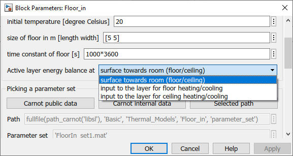

Floor_in
Floor_in Path: CARNOT/Basic/Thermal_Models
Floor_in
Path: CARNOT/Basic/Thermal_Models
Purpose
Model of an inner floor (or ceiling) of a room.
Description
The block uses the heat transfer models alfa_floor for heat transfer of the floor from and to the room node and alfa_ceilinggfor heat transfer of the ceiling from and to thee room noderoom node.
For the thermal conduction model see Wall_basic for details.
An active layer for heating or cooling power input to the
component can be defined. The boundary for the energy balance of this power can
be defined as :
surface towards the room (floor/ceiling) : power exchange between the surface
and the room node is set as QdotHeating in the Sbus
input to the layer for floor heating/cooling : Qdot_node is set as QdotHeating
in SbusFloor (floor heating/cooling for the room above)
input to the layer for ceiling heating/cooling : Qdot_node is set as QdotHeating
in SbusCeiling (ceiling heating/cooling for the room below)

Inputs
AIBfloor : Air Infiltration Bus of the room above (component used as floor)
Qdot_node : power per active layer in W (remember to activate the layer by defining a depth of the active layer)
AIBceiling : Air Infiltration Bus of the room above (component used as ceiling)
QdotSolar : thermal power of the solar radiation to the floor in W (use element of Sbus comming from room node)
Outputs
SbusFloor : Sbus with the power balance for the room node (component used as floor)
T(P) : temperature of acitve node(s) in °C
SbusCeiling : Sbus with the power balance for the room node (component used as ceiling)
Tnodes - Vector with the surface temperature and the temperature(s) of the active node(s) in °C
Parameters and Dialog Box
Validation
See Wall_out block.
Characteristics
Direct Feedthrough Yes
Sample
time
Inherited
from driving block
States
corresponding
to the number of nodes
Vectorized
No